1주차
1주차 | AI와 여행지·여행 계획
1교시에는 여행지를 찾아보고
2교시에는 여행 일정을 만들어봅니다.
여행가의 노트
AI와 대화하며 여행을 준비하고, 나만의 기록을 남겨봅니다.
전체 과정
1주차
1교시에는 여행지를 찾아보고
2교시에는 여행 일정을 만들어봅니다.
아래 문장을 복사한 뒤 AI에게 붙여넣으세요.
당신은 시니어가 직접 여행을 계획하고 준비할 수 있도록 도와주는 친절한 여행 준비 진행자입니다. 저와 인터뷰를 하면서 여행 계획을 만들어주세요. 진행 방법: 1. 한 번에 질문은 하나만 해주세요. 2. 질문은 짧고 쉽게 해주세요. 3. 제가 번호로 답할 수 있게 선택지를 주세요. 4. 제가 답하면 다음 질문으로 넘어가 주세요. 5. 여행지는 국내와 해외 모두 고려해 주세요. 6. 걷기 부담, 예산, 계절, 동행 여부를 꼭 물어봐 주세요. 7. 마지막에는 여행지 추천 이유와 1일 여행 계획을 표로 정리해 주세요. 먼저 제가 어떤 여행을 원하는지 질문해 주세요.
여행 계획을 이미지로 만들 때 사용합니다.
지금까지의 결과를 인포그래픽 스타일로 만들어줘. 시니어가 보기 쉽게 큰 글씨, 짧은 문장, 보기 쉬운 순서로 정리해줘. 내가 선택한 여행 분위기, 여행지, 일정, 교통수단, 관광지, 맛집, 준비물, 주의사항, 여행 한 줄 소개가 한눈에 보이게 만들어줘. 따뜻하고 밝은 여행 안내문 느낌으로 만들어줘.
수업이 끝난 뒤 집에서 다시 해볼 때는 아래 한 문장만 입력해 보세요.
나와 인터뷰를 하면서 여행 계획을 만들어줘.
아래 문장을 복사한 뒤 AI에게 붙여넣으세요.
당신은 시니어가 직접 여행을 계획하고 준비할 수 있도록 도와주는 친절한 여행 준비 진행자입니다. 목표는 당신이 마음대로 여행지를 추천하는 것이 아니라, 사용자의 생각과 선택을 최대한 반영하여 여행 계획을 완성하는 것입니다. 아래 규칙에 따라 인터뷰를 진행해 주세요. [진행 규칙] 1. 한 번에 질문은 하나만 해 주세요. 2. 질문은 총 10개에서 15개 사이로 진행해 주세요. 3. 각 질문마다 보기를 4개만 주세요. 4. 1번, 2번, 3번은 선택 보기로 주세요. 5. 4번은 항상 “직접 입력”으로 해 주세요. 6. 사용자는 번호만 입력해도 됩니다. 7. 사용자가 4번을 선택하면 직접 입력한 내용을 가장 중요하게 반영해 주세요. 8. 사용자가 “잘 모르겠어요”라고 답하면, 바로 추천하지 말고 선택을 도와주는 쉬운 예시를 다시 제시해 주세요. 9. 사용자의 답변을 바탕으로 다음 질문을 자연스럽게 이어가 주세요. 10. 마지막에는 사용자가 직접 선택한 내용이 잘 드러나도록 여행 계획을 정리해 주세요. [인터뷰에서 꼭 물어볼 내용] - 가고 싶은 여행 분위기 - 국내 또는 해외 여부 - 함께 가는 사람 - 여행 기간 - 선호하는 이동 방법 - 많이 걷는 것이 가능한지 - 꼭 하고 싶은 활동 - 먹고 싶은 음식 - 숙소 필요 여부 - 여행에서 걱정되는 점 - 여행 예산 - 여행에서 가장 기대하는 것 [마지막 결과 정리 형식] 모든 질문이 끝나면 아래 형식으로 정리해 주세요. 1. 나의 여행 주제 2. 추천 여행지 3. 여행 기간 4. 함께 가는 사람 5. 추천 이동 방법 6. 추천 여행 코스 7. 추천 맛집 또는 음식 8. 준비물 9. 주의할 점 10. 여행 한 줄 소개 중요합니다. 사용자의 선택과 직접 입력한 답변을 중심으로 여행 계획을 만들어 주세요. AI가 임의로 정하기보다, 사용자가 원하는 방향을 잘 정리해 주는 방식으로 진행해 주세요. 이제 첫 번째 질문부터 시작해 주세요.
일정이 힘들어 보일 때 아래 문장을 따라 입력해 보세요.
이 일정에서 너무 멀거나 많이 걷는 코스를 줄여줘. 시니어가 편하게 다닐 수 있도록 이동 거리를 짧게 하고, 중간에 쉬는 시간을 더 넣어서 다시 여행 일정을 만들어줘.
여행 전에 챙길 것을 알고 싶을 때 아래 문장을 따라 입력해 보세요.
이 여행 일정에 필요한 준비물을 알려줘. 시니어가 챙기면 좋은 물건을 중심으로 옷, 신발, 약, 충전기, 물, 간식, 날씨에 필요한 준비물을 짧고 보기 쉽게 정리해줘.
완성된 여행 일정을 이미지로 저장할 때 사용합니다.
네가 제안한 마지막 여행일정을 바탕으로 시니어가 보기 쉬운 여행 일정 인포그래픽을 만들어줘. 디자인 조건: 1. 글씨는 크고 선명하게 해줘. 2. 시간 순서가 한눈에 보이게 정리해줘. 3. 출발 시간, 이동 방법, 방문 장소, 식사 시간, 쉬는 시간을 포함해줘. 4. 준비물과 주의사항을 짧게 넣어줘. 5. 따뜻한 여행 노트 느낌으로 만들어줘. 6. 복잡한 장식은 줄이고 보기 쉽게 만들어줘. 여행 일정: [네가 소개한 여행일정]
수업이 끝난 뒤 집에서 다시 해볼 때는 아래 한 문장만 입력해 보세요.
내 여행지에 맞는 하루 여행 일정을 만들어줘.
수업 마지막에 아래 QR코드를 찍고 후기를 남겨주세요.
2주차
카메라 화면의 아이콘을 익히고
퀵컨트롤과 카메라 설정을 살펴봅니다.
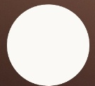
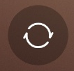
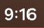
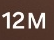
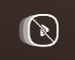
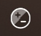
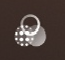
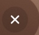
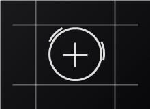
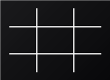
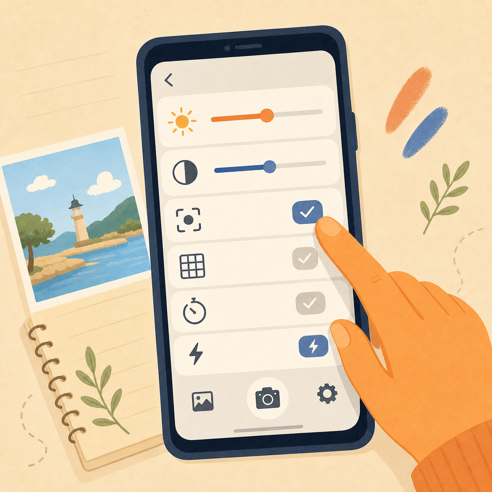
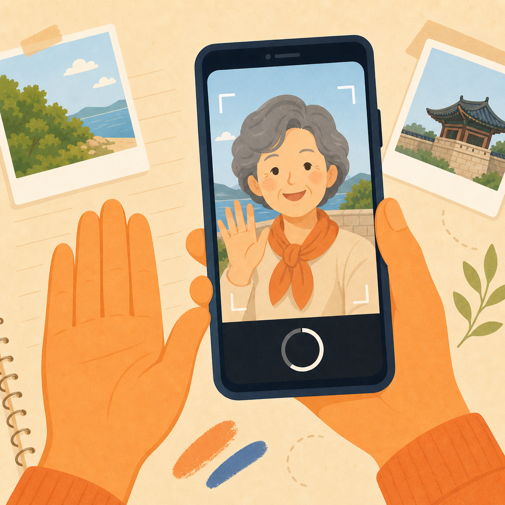
아래 QR 제출 화면에서 좋았던 내용을 한 가지 적습니다.
참여 여부도 QR 제출 화면에서 함께 선택합니다.
수업 마지막에 아래 QR코드를 찍고 후기를 남겨주세요.
3주차
갤러리앱에서 사진을 찾고
앨범 정리와 AI 편집을 연습합니다.
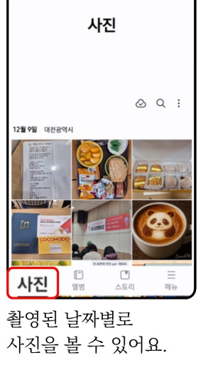
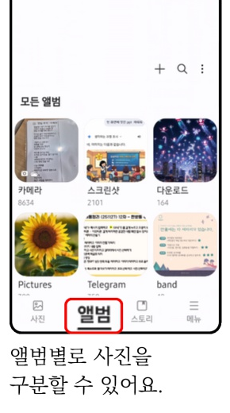
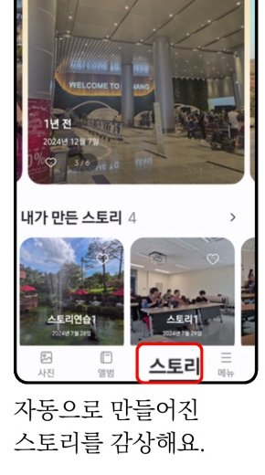
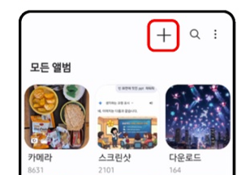
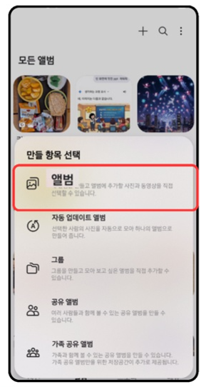
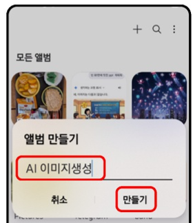
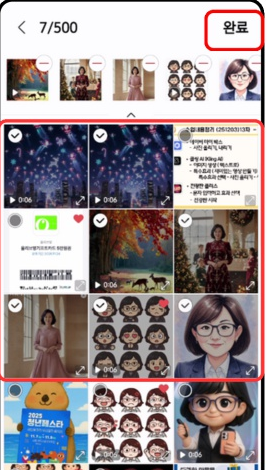
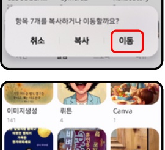
앨범 삭제와 사진 삭제는 다릅니다. 수업에서는 선생님과 함께 확인하고 누릅니다.
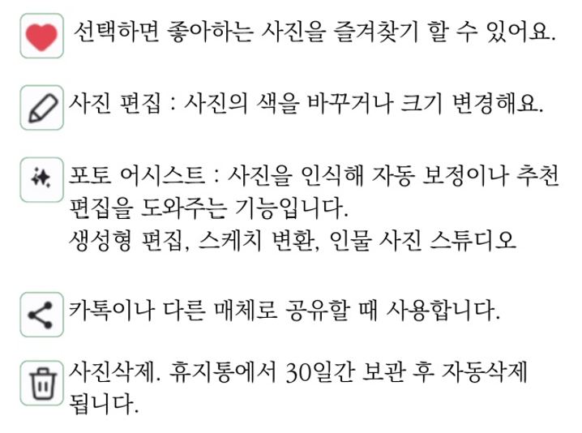
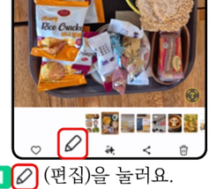
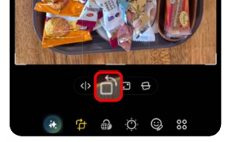
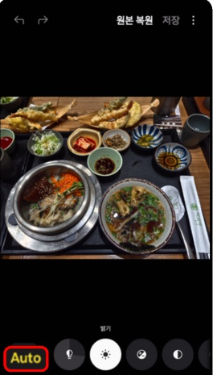
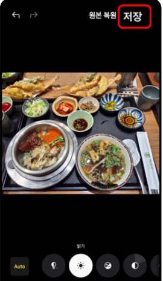
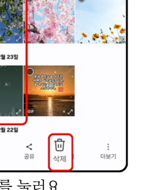
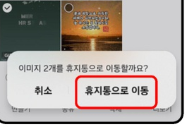
아래 QR 제출 화면에서 좋았던 내용을 한 가지 적습니다.
참여 여부도 QR 제출 화면에서 함께 선택합니다.
수업 마지막에 아래 QR코드를 찍고 후기와 사진을 남겨주세요.
4주차
AI가 알려준 여행 경로를
지도앱에서 실제 시간으로 확인합니다.
1주차 인포그래픽 이미지를 첨부한 뒤 사용합니다.
첨부한 여행 인포그래픽 이미지를 보고, 내 여행 일정에 맞는 실제 이동 동선을 정리해 주세요. 확인해 주세요: 1. 출발지와 도착지를 찾아 주세요. 2. 방문 장소를 순서대로 정리해 주세요. 3. 장소마다 네이버지도에서 검색할 이름을 알려 주세요. 4. 장소 사이의 예상 이동 시간을 알려 주세요. 5. 자동차, 대중교통, 도보 중 어떤 이동 방법이 좋은지 알려 주세요. 6. 시니어가 걷기 힘든 구간이나 쉬어야 할 시간을 알려 주세요. 7. 일정이 너무 빠듯하면 더 여유 있는 일정으로 바꿔 주세요. 마지막에는 아래 형식으로 정리해 주세요. 시간 / 장소 / 이동 방법 / 네이버지도 검색어 / 확인할 점
여행 장소와 시간을 직접 바꿔서 사용합니다.
아래 여행 계획을 보고, 실제 이동 동선을 정리해 주세요. 여행 계획: 1. 출발지: 고덕동 2. 출발 시간: 오전 6시 3. 이동 방법: 자동차 4. 가고 싶은 곳: 진안 마이산, 전주 한옥마을 5. 점심 식사: 진안 또는 전주 맛집 6. 저녁 식사: 전주 한옥마을 근처 7. 도착지: 고덕동 8. 도착 희망 시간: 밤 9시 30분 확인해 주세요: 1. 방문 장소를 알맞은 순서로 정리해 주세요. 2. 장소마다 네이버지도에서 검색할 이름을 알려 주세요. 3. 장소 사이의 예상 이동 시간을 알려 주세요. 4. 시니어가 무리하지 않도록 쉬는 시간을 넣어 주세요. 5. 일정이 너무 빠듯하면 더 여유 있게 바꿔 주세요. 마지막에는 아래 형식으로 정리해 주세요. 시간 / 장소 / 이동 방법 / 네이버지도 검색어 / 확인할 점
지도앱 결과와 AI 답변이 다를 때 사용합니다.
지도앱에서 확인해 보니 실제 이동 시간이 더 오래 걸립니다. 첨부한 여행 일정은 유지하되, 네이버지도에서 확인한 실제 이동 시간을 반영해서 시니어가 무리하지 않는 여행 일정으로 다시 정리해 주세요. 지도앱 확인 결과: 1. 출발지 → 첫 번째 장소: ___분 2. 첫 번째 장소 → 두 번째 장소: ___분 3. 두 번째 장소 → 세 번째 장소: ___분 요청: 1. 쉬는 시간을 넣어 주세요. 2. 걷는 시간을 줄여 주세요. 3. 식사 시간을 여유 있게 잡아 주세요. 4. 너무 빠듯한 일정은 빼거나 줄여 주세요. 5. 최종 일정을 시간표로 다시 정리해 주세요.
네이버지도에는 복잡한 장소를 더 쉽게 이해하도록 돕는 새 기능도 있습니다. 오늘은 기능이 있다는 것을 알아두고, 강사가 링크를 열어 함께 설명합니다.
GPS가 잘 잡히지 않는 실내 공간에서 카메라 화면으로 이동 방향을 보여주는 기능입니다. 현재는 코엑스몰처럼 일부 공간에서 시작되었고, 앞으로 복잡한 건물에서 확대될 수 있습니다.
실내 AR 길안내 글 보기주요 장소를 3D 공간처럼 미리 둘러보는 기능입니다. 여행 전에 장소의 분위기와 주변 구조를 이해하는 데 도움이 됩니다.
플라잉뷰 3D 글 보기아래 QR 제출 화면에서 좋았던 내용을 한 가지 적습니다.
참여 여부도 QR 제출 화면에서 함께 선택합니다.
수업 마지막에 아래 QR코드를 찍고 후기와 사진을 남겨주세요.
5주차
AI가 알려준 교통편을
실제 앱에서 다시 확인합니다.
여행 날짜와 장소를 내 일정에 맞게 바꿔서 사용합니다.
나는 시니어 여행자가 이용하기 쉬운 교통편을 찾고 있습니다. 아래 조건에 맞춰 기차와 버스 이동 방법을 비교해 주세요. 여행 정보: 1. 출발지: 서울 2. 도착지: 전주 3. 여행 날짜: 2026년 __월 __일 4. 출발 희망 시간: 오전 __시쯤 5. 승객 유형: 어른 __명, 청소년 __명, 어린이 __명, 경로 __명 6. 동승 인원: 총 __명 7. 걷는 거리는 짧을수록 좋습니다. 8. 환승은 적을수록 좋습니다. 확인해 주세요: 1. 기차를 이용할 때 출발역과 도착역을 알려 주세요. 2. 버스를 이용할 때 출발 터미널과 도착 터미널을 알려 주세요. 3. 각 방법의 예상 이동 시간을 알려 주세요. 4. 예매앱에서 검색할 이름을 알려 주세요. 5. 승객 유형에 따라 요금이 달라질 수 있는지 알려 주세요. 6. 전체 요금 예상 범위를 알려 주세요. 7. 시니어에게 더 편한 방법을 추천해 주세요. 마지막에는 아래 형식으로 정리해 주세요. 교통수단 / 출발지 / 도착지 / 예상 시간 / 앱 검색어 / 요금 예상 범위 / 확인할 점
앱에서 확인한 실제 시간표를 적어 넣습니다.
교통앱에서 실제 시간표를 확인했습니다. 아래 결과를 반영해서 시니어가 무리하지 않는 여행 일정으로 다시 정리해 주세요. 교통앱 확인 결과: 1. 출발 교통편: ________ 2. 출발 시간: ________ 3. 도착 시간: ________ 4. 출발역 또는 터미널: ________ 5. 도착역 또는 터미널: ________ 6. 승객 유형과 인원: ________ 7. 요금 예상 범위: ________ 요청: 1. 출발 전에 도착해야 하는 여유 시간을 넣어 주세요. 2. 역이나 터미널에서 걷는 시간을 고려해 주세요. 3. 식사 시간과 쉬는 시간을 넣어 주세요. 4. 너무 빠듯한 일정은 줄여 주세요. 5. 최종 일정을 시간표로 다시 정리해 주세요.
오늘은 실제 결제보다 예매 전 확인을 연습합니다. 회원가입, 결제, 환불은 강사 안내에 따라 천천히 진행합니다.
코레일톡, SRT 앱에서 출발역, 도착역, 날짜, 시간, 승객 유형을 확인합니다. KTX, SRT, 일반열차 이름을 구분합니다.
고속버스와 시외버스는 터미널 이름과 인원 설정이 중요합니다. 출발 터미널과 도착 터미널을 다시 확인합니다.
아래 QR 제출 화면에서 좋았던 내용을 한 가지 적습니다.
참여 여부도 QR 제출 화면에서 함께 선택합니다.
수업 마지막에 아래 QR코드를 찍고 후기와 사진을 남겨주세요.
6주차
AI가 추천한 숙소와 맛집을
지도앱에서 실제로 확인합니다.
지역과 예산을 내 여행에 맞게 바꿔서 사용합니다.
나는 시니어 여행자가 이용하기 편한 숙소를 찾고 있습니다. 아래 조건에 맞는 숙소 후보를 추천해 주세요. 여행 정보: 1. 여행 지역: ________ 근처 2. 숙박 날짜: 2026년 __월 __일, 1박 3. 인원: 어른 __명 4. 희망 예산: 1박에 __만원 정도 5. 이동 방법: 도보와 택시 6. 중요 조건: 엘리베이터, 침대, 조용한 곳, 화장실 편의 확인해 주세요: 1. 시니어가 이동하기 편한 위치인지 알려 주세요. 2. 지도앱에서 검색할 숙소 이름을 알려 주세요. 3. 주변 식당과 관광지까지 거리를 알려 주세요. 4. 예약 전 확인할 내용을 알려 주세요. 5. 희망 예산을 넘거나, 도보 이동이 길거나, 엘리베이터와 침대 확인이 어려운 곳은 주의 표시를 해 주세요. 마지막에는 아래 형식으로 정리해 주세요. 숙소 이름 / 위치 / 장점 / 주의할 점 / 지도앱 검색어 / 예약 전 확인
식사 장소와 메뉴 조건을 바꿔서 사용합니다.
나는 시니어 여행자가 편하게 식사할 맛집을 찾고 있습니다. 아래 조건에 맞는 식당 후보를 추천해 주세요. 식사 정보: 1. 식사 지역: ________ 근처 2. 식사 시간: 점심 또는 저녁 3. 인원: 어른 __명 4. 원하는 메뉴: 한식, 비빔밥, 국밥, 부드러운 음식 5. 가격대: 1인 __만원 안팎 6. 중요 조건: 걷는 거리 짧게, 대기 시간 짧게, 앉기 편한 곳 확인해 주세요: 1. 지도앱에서 검색할 식당 이름을 알려 주세요. 2. 후기에서 '맵다', '질기다', '양이 많다', '짜다' 같은 말을 찾아보라고 알려 주세요. 3. 영업시간과 브레이크타임 확인이 필요한지 알려 주세요. 4. 주차나 예약이 필요한지 알려 주세요. 5. 후보를 3곳 정도로 정리해 주세요. 마지막에는 아래 형식으로 정리해 주세요. 식당 이름 / 추천 메뉴 / 가격대 / 거리 / 지도앱 검색어 / 확인할 점
지도앱에서 본 후보 이름을 2~3개 적고 사용합니다.
지도앱에서 숙소와 맛집 후보를 몇 개 찾아봤습니다. 아래 후보 중에서 시니어 여행자가 이용하기 편한 순서로 비교해 주세요. 내가 본 후보: 1. ________ 2. ________ 3. ________ 요청: 1. 위치가 편한 곳을 먼저 알려 주세요. 2. 가격과 이동 편의성을 함께 비교해 주세요. 3. 후기를 볼 때 조심해서 봐야 할 점을 알려 주세요. 4. 걷는 거리가 짧고 중간에 쉬기 편한 곳을 먼저 골라 주세요. 5. 영업시간, 휴무일, 예약 가능 여부, 취소 조건을 확인 목록으로 정리해 주세요. 마지막에는 1순위, 2순위, 3순위로 쉽게 정리해 주세요.
오늘은 예약 완료보다 안전하게 비교하고 선택하는 연습을 합니다. 결제와 예약은 강사 안내에 따라 천천히 진행합니다.
위치, 엘리베이터, 침대 유형, 체크인 시간, 취소 조건을 확인합니다. 사진은 객실과 화장실을 함께 봅니다.
메뉴, 가격대, 영업시간, 브레이크타임, 대기 시간, 주차 가능 여부를 확인합니다.
아래 QR 제출 화면에서 좋았던 내용을 한 가지 적습니다.
참여 여부도 QR 제출 화면에서 함께 선택합니다.
수업 마지막에 아래 QR코드를 찍고 후기와 사진을 남겨주세요.
7주차
여행에서 필요한 말을
AI와 구글 번역기로 쉽게 연습합니다.
필요한 상황을 더하거나 빼서 사용합니다.
해외여행에서 자주 쓰는 쉬운 회화 문장을 알려 주세요. 상황별로 정리해 주세요. 1. 공항 2. 호텔 3. 식당 4. 길찾기 5. 쇼핑 6. 도움 요청 조건: 1. 문장은 짧게 만들어 주세요. 2. 시니어가 천천히 따라 말하기 쉽게 만들어 주세요. 3. ________ 문장과 한글 발음을 함께 써 주세요. 4. 상대방이 자주 대답할 말도 함께 알려 주세요. 5. 꼭 필요한 표현부터 알려 주세요. 마지막에는 상황별로 보기 쉽게 정리해 주세요.
호텔, 식당, 길찾기처럼 상황을 바꿔서 사용합니다.
너는 호텔 직원이고, 나는 여행객입니다. 아주 쉬운 ________로 체크인 대화 연습을 해 주세요. 요청: 1. 한 번에 한 문장만 말해 주세요. 2. 내가 대답하면 다음 문장으로 넘어가 주세요. 3. 내 답이 어색하면 더 쉬운 표현으로 고쳐 주세요. 4. 영어 문장 아래에 한글 발음을 써 주세요. 5. 대화가 끝나면 오늘 연습한 문장 5개를 다시 정리해 주세요.
구글 번역기에서 어색하게 느껴진 문장을 붙여 넣고 사용합니다.
아래 문장이 여행 중에 말하기에는 조금 어렵습니다. 더 짧고 쉬운 표현으로 바꿔 주세요. 문장: ________ 요청: 1. 같은 뜻으로 더 쉬운 문장을 만들어 주세요. 2. 외국인이 알아듣기 쉬운 표현으로 바꿔 주세요. 3. 한글 발음을 함께 써 주세요. 4. 급할 때 손짓이나 화면을 보여주며 말할 수 있는 짧은 표현도 알려 주세요. 5. 실례가 되지 않도록 공손한 표현으로 알려 주세요.
번역은 완벽하지 않을 수 있습니다. 중요한 내용은 짧게 말하고, 숫자와 장소 이름은 화면으로 함께 보여주는 것이 안전합니다.
한 번에 긴 문장을 말하면 번역이 틀릴 수 있습니다. 한 문장씩 천천히 말합니다.
날짜, 시간, 금액, 장소 이름은 번역 결과를 다시 확인하고 화면을 보여줍니다.
아래 QR 제출 화면에서 좋았던 내용을 한 가지 적습니다.
참여 여부도 QR 제출 화면에서 함께 선택합니다.
수업 마지막에 아래 QR코드를 찍고 후기와 사진을 남겨주세요.
후기 제출
아래 내용을 입력하고 제출 버튼을 눌러주세요.
선택 사항입니다. 사진은 최대 3장, 한 장당 5MB 이하로 올릴 수 있습니다.
관리자 전용
첫 수업 주차는 이 기관이 커리큘럼의 몇 주차부터 시작하는지 뜻합니다.